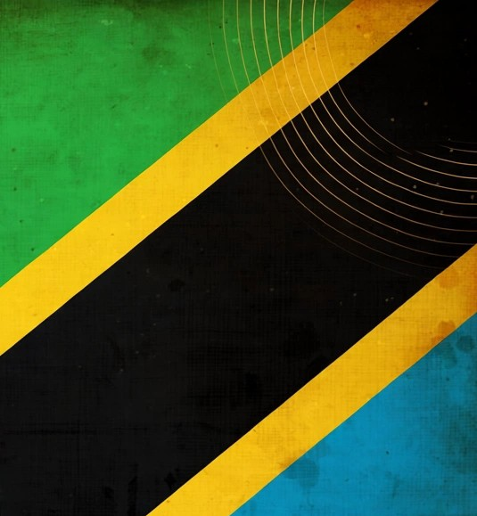

A legendary Congolese singer, songwriter, bandleader and cultural icon whose music, fashion and vision helped carry Congolese Rumba from Kinshasa to the world.
Full Name: Jules Shungu Wembadio Pene Kikumba
Known As: Papa Wemba
Born: 14 June 1949
Born In: Lubefu, Democratic Republic of Congo 🇨🇩
Died: 24 April 2016
Profession: Singer, songwriter, musician, bandleader and cultural icon
Genres: Congolese Rumba, Soukous, Rumba Rock
Major Groups: Zaïko Langa Langa, Isifi Lokolé, Yoka Lokolé and Viva la Musica
Known For: His distinctive voice, songwriting, stage presence, fashion and enormous influence on Congolese popular culture.
Jules Shungu Wembadio Pene Kikumba was born in 1949 in what was then the Belgian Congo.
He grew up in a musical environment and eventually developed into one of the most recognisable voices of the Congolese popular music tradition.
His early life coincided with a period of enormous cultural change in Congo. The country was moving through independence, urbanisation and the rapid development of modern African popular music.
Music became one of the most powerful ways in which young Congolese people expressed identity, modernity and independence.
Papa Wemba was one of the founding members of Zaïko Langa Langa, an orchestra that became one of the most influential groups in the history of Congolese music.
Zaïko represented a younger generation that wanted to push Congolese music beyond the established orchestral formulas of earlier decades.
The group developed a more energetic rhythm, stronger emphasis on dancing and a youthful performance identity.
Papa Wemba quickly became one of the most recognisable personalities associated with this new musical movement.
Zaïko's musicians developed energetic guitar patterns that helped push Congolese music toward the sound that would eventually become associated with Soukous.
The group experimented with rhythm and arrangement, giving younger listeners a sound that felt different from the older orchestral tradition.
Dance became increasingly central to Zaïko's identity and to the broader development of Congolese popular music.
The band's musicians became cultural personalities rather than simply performers.
After his period with Zaïko Langa Langa, Papa Wemba became involved in new musical projects including Isifi Lokolé and later Yoka Lokolé.
These groups formed important chapters in his musical development and allowed him to continue experimenting with new sounds, performers and ideas.
This period eventually led toward the creation of the orchestra that would become most closely associated with his name: Viva la Musica.
In 1977, Papa Wemba founded Viva la Musica.
The orchestra became one of the defining musical institutions of his career.
Viva la Musica combined Congolese Rumba traditions with newer influences and became a major platform for young musicians.
The group also became associated with a distinctive visual identity built around music, fashion, dance and youth culture.
Papa Wemba eventually developed an international career that took Congolese music to audiences far beyond Central Africa.
He spent significant periods working in Europe and became one of the most recognisable African musicians on the international world-music circuit.
His international work helped introduce new audiences to Lingala-language music and to the wider cultural world surrounding Congolese Rumba.
Papa Wemba's music is often associated with the term Rumba Rock, reflecting his ability to combine Congolese Rumba traditions with newer sounds.
His music retained the melodic identity of Congolese Rumba while incorporating elements of contemporary popular music.
This ability to adapt without abandoning his roots became one of the defining characteristics of his career.
Papa Wemba was not only a musician. He became one of the most influential cultural figures associated with the Congolese fashion movement known as La Sape.
Sapeurs placed enormous importance on elegance, clothing, presentation and personal style.
Papa Wemba transformed fashion into an extension of his artistic identity.
His colourful suits, carefully selected clothing and theatrical appearance became inseparable from the image of Viva la Musica.
Through this combination of music and fashion, Papa Wemba helped turn the African musician into a complete cultural personality.
He created and performed Congolese Rumba and Rumba Rock while constantly adapting his sound.
His clothing and style helped popularise the image of the elegant Congolese Sapeur.
His concerts combined singing, movement, fashion and theatrical presentation.
He became an international symbol of Congolese creativity and cultural pride.
Papa Wemba possessed one of the most recognisable voices in Congolese popular music, combining emotional expression with a distinctive vocal character.
His music remained rooted in the guitar-driven traditions of Congolese Rumba while embracing newer arrangements.
His career followed the transformation of Congolese music toward faster and more energetic rhythmic styles.
Papa Wemba became skilled at presenting Congolese musical ideas to international audiences without abandoning their African foundation.
One of Papa Wemba's greatest contributions was his ability to create opportunities for younger musicians.
Viva la Musica became a musical school where singers, instrumentalists and performers could develop their talents.
Many musicians connected to Papa Wemba's musical world went on to establish careers of their own.
This makes his legacy larger than his personal discography: he helped create a chain through which Congolese musical knowledge could move from one generation to another.
Papa Wemba's influence also connects directly to the story of Koffi Olomidé.
Koffi became associated with Viva la Musica during the early part of his musical journey, before developing his own career and eventually founding Quartier Latin.
This connection is important because it shows how one generation of Congolese musicians influenced the next.
Papa Wemba's music travelled throughout Africa and became particularly influential in regions where Congolese Rumba and Soukous had already developed strong audiences.
His international career further expanded the reach of Lingala music and introduced the cultural world surrounding Congolese Rumba to audiences in Europe and elsewhere.
His influence was therefore musical, visual and cultural.
Papa Wemba belongs to a remarkable chain of Congolese musical history.
Wendo Kolosoy helped establish the foundations of Congolese Rumba.
Grand Kallé and African Jazz expanded the orchestral tradition.
Franco Luambo and OK Jazz developed the music into a massive cultural institution.
Tabu Ley Rochereau pushed the music toward new melodic and performance possibilities.
Zaïko Langa Langa represented a new generation and accelerated the transformation toward modern dance music.
Papa Wemba took that new generation and transformed it into an international cultural phenomenon through Viva la Musica, fashion and Rumba Rock.
Papa Wemba became one of the most internationally recognised African musicians of his generation.
His career earned major recognition across Africa and internationally, while his contribution to Congolese Rumba became part of the broader cultural heritage surrounding the genre.
His death in 2016 was widely mourned throughout the African music community. The Recording Academy included Papa Wemba among the musicians remembered in its 2016–2017 In Memoriam tribute. 1
Papa Wemba died on 24 April 2016 after collapsing while performing at the FEMUA music festival in Abidjan, Côte d'Ivoire.
His death occurred while he was doing what had defined much of his life: standing on a stage and performing music.
His passing marked the end of one of the most influential careers in Congolese popular music.
Papa Wemba's legacy cannot be reduced to a list of songs.
He was a musician, bandleader, mentor, fashion icon and cultural ambassador.
He helped redefine what it meant to be an African music star.
His influence can be seen in Congolese Rumba, Soukous, African fashion, dance culture and the generations of musicians who followed him.
For Inside the Lyrics with Sir Wakho, Papa Wemba represents one of the clearest examples of how music can become much larger than sound.
His music became identity. His fashion became culture. His bands became schools. And his career became part of the history of modern Africa.
Explore the Zaïko Langa Langa generation that helped transform Congolese music.
Read His Story →Discover the artist whose early journey connected him to Papa Wemba's Viva la Musica.
Read His Story →Explore one of the major pioneers who influenced the generations that followed.
Read His Story →